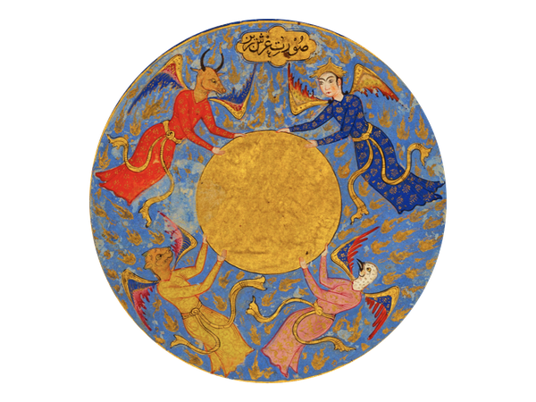
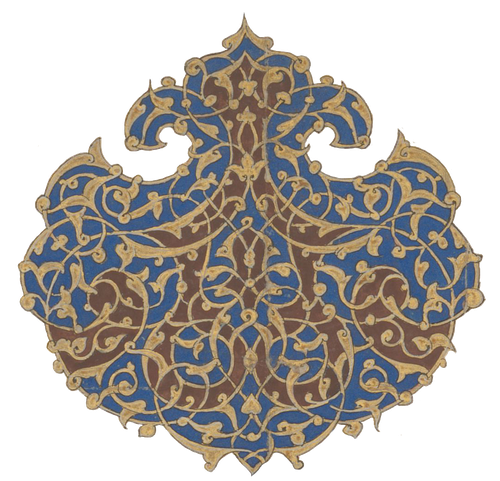
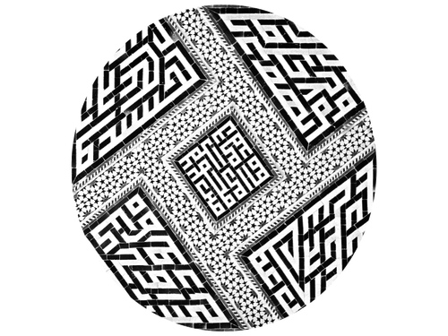
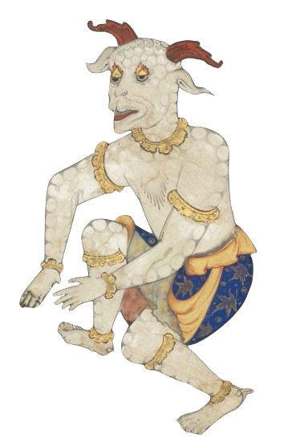

University Life
Administrative Service

Department of Religious Studies, Yale University
Prior to joining Yale, I served as Chair of the Department of Religion at Haverford College. At Yale, I served as Director of Graduate Studies and Director of Undergraduate Studies before my appointment as Chair of the Department of Religious Studies in 2024.
Council on Middle East Studies, Yale University
In 2023, I was appointed Chair of the Council on Middle East Studies. Housed within the MacMillan Center, the Council on Middle East Studies oversees a graduate certificate program, an extensive undergraduate curriculum on Modern Middle East Studies, visiting fellowships, and public programming. My tenure as Chair has included organizing symposia, workshops, and lecture series, as well as overseeing the Iran Colloquium, which promotes the study of Persian history, language, and culture across their full geographic and temporal ranges.

Symposia & Conferences
A sustained dimension of my work at Yale has been organizing symposia and conferences through the Council on Middle East Studies and related university programs.
Exploring Qajar imperial culture, science, and statecraft within the broader nineteenth-century Persianate world, with panels on chronicles, scientific practice, environments, and legal and dynastic authority.
macmillan.yale.edu →On manuscript traditions of practical magic, with talks on grimoires, incantation texts, and talismanic materials, alongside a workshop exploring manuscript holdings at the Beinecke Rare Book and Manuscript Library.
macmillan.yale.edu →Examining gender, religious authority, and authenticity in Islamic thought and practice, drawing together scholars in Religious Studies, Near Eastern Languages, Anthropology, and Law.
Featuring discussions on theology and law, natural philosophy, and manuscript traditions that span diverse historical and geographic contexts, including a dedicated manuscript workshop at the Beinecke.
macmillan.yale.edu →
Selected Courses
My teaching at Yale spans the undergraduate and doctoral levels, across the history, philosophy, literature, and material culture of Islam and the comparative study of religion and science.
Undergraduate
- Introduction to the Quran A comparative study of the Quran as literary, historical, and theological text, covering collection and transmission, divine speech, translation debates, exegesis, material culture, and the artistic practices of veneration.
- Representing Muhammad From devotional biography and hagiography to polemic and political contestation, this course traces the representation of the Prophet across Islamic history through literary, visual, legal, and theological sources.
- Introduction to the Occult Sciences A history of the occult sciences from antiquity to modernity, tracing how hidden forces in nature were theorized across philosophy, religion, and literature, from Mesopotamian incantation bowls and Greek magical papyri to Newton’s alchemy and colonial modernity.
- Enchantment What does it mean to live in a disenchanted world? This seminar interrogates the categorical logic that produced such antinomies as rational and superstitious, secular and religious, Western and Eastern, tracing disenchantment as a constitutive feature of secular modernity.
- Foundations of Islamic Philosophy An introduction to the Islamic philosophical tradition in global context: Greek antecedents, Neoplatonism, and Aristotelian metaphysics alongside central debates on reason and revelation, divine justice, cosmology, and the philosophy of the soul.
Graduate
- Origins of Islam Current debates in the academic study of early Islamic history, surveying sources across multiple genres from pre-Islamic Arabia through the Abbasid caliphate, with case studies in law, gender, slavery, and memory.
- Islamic Law and Mysticism The development of law and mysticism in Islamic thought from the early period through the Mughal, Ottoman, and Safavid empires, with attention to reason and revelation, orthodoxy and antinomianism, and the formations of legal and spiritual authority.
- Readings in Islamic Social History The classical period of Islamic history through Arabic prosopography, geography, historiography, and encyclopedism, tracing the lives, networks, and careers of scholars, administrators, and merchants alongside patterns of religious authority and conversion.
- Magic and Science in Islamic Thought Through primary Arabic and Persian sources, this seminar traces the intertwined histories of magic and natural philosophy, examining how the marvelous, the occult, and the wondrous were theorized across cosmographical compendia, philosophical treatises, and handbooks of practical magic.
Graduate Mentorship
I regularly serve on doctoral dissertation committees within Yale and at other institutions, advising students across Art History, Comparative Literature, History, Medieval Studies, Near Eastern Languages and Civilizations, and Religious Studies.
